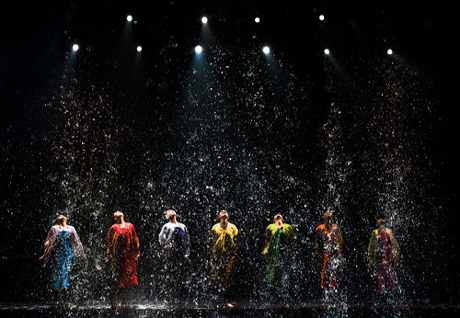
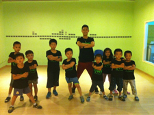

Latest News



Here are the 12 teams that made the second round of the 2013 European Latin Formation. Picture courtesy of Matthijs Mennes, who took it and posted it, and of Markus Sonyi, a friend on facebook who shared it.
The first round of the 2013 WDSF European DanceSport Championship Latin Formation is in progress at the Siemens Arena in Vilnius, LTU. Dr Helmut Roland has forwarded the first photographs taken during that round.
Helmut Roland interviews Aleksey Litvinov, the coach of the Russian formation Vera Tiumen prior to the first round of the 2013 WDSF European DanceSport Championship Latin Formation in Vilnius, LTU, on 18 May.
Rehearsal Schedule
- MONDAY 5/28
- NO CLASSES/ STUDIO CLOSED
- TUESDAY 5/29
- ALL PERFORMING GROUPS (ARRIVE AT 3:45) 4:00-6:30 Althea, DP2, Dirty Pop, Advanced, Kendra, (Elem 1& Beg 1Elem 1- International Love, DP1, Lucas, 4-5:30, teen/adult 5-6) Beg 1-Walk the Dinosaur, Jazz,Teen/Adult-Tokyo Drift
- MONDAY 5/28
- NO CLASSES/ STUDIO CLOSED
- TUESDAY 5/29
- ALL PERFORMING GROUPS (ARRIVE AT 3:45) 4:00-6:30 Althea, DP2, Dirty Pop, Advanced, Kendra, (Elem 1& Beg 1Elem 1- International Love, DP1, Lucas, 4-5:30, teen/adult 5-6) Beg 1-Walk the Dinosaur, Jazz,Teen/Adult-Tokyo Drift
Summer 2013 Dance Program

Follow us on: